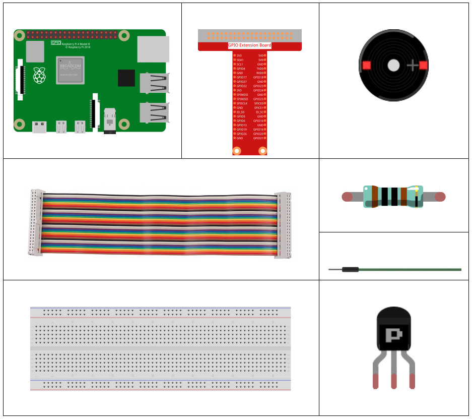
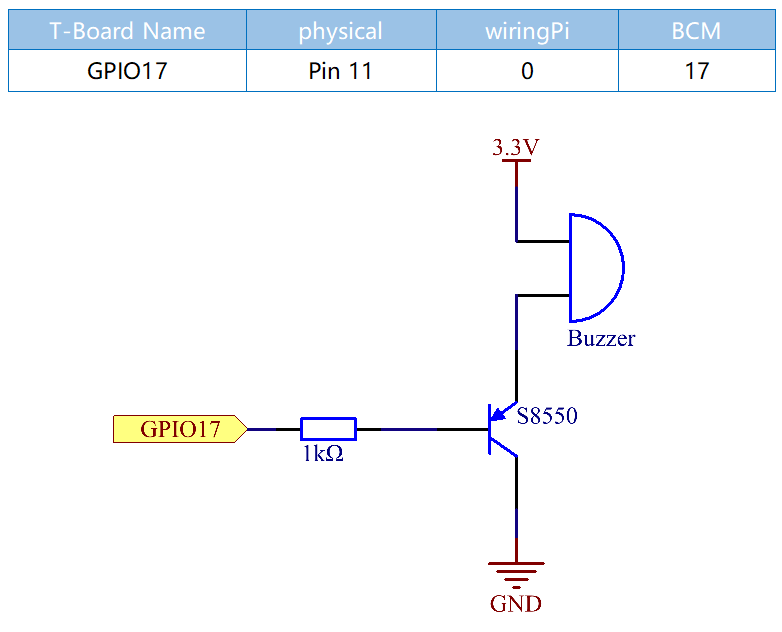

1.2.2 Passive Buzzer¶
Introduction¶
In this lesson, we will learn how to make a passive buzzer play music.
Components¶
Schematic Diagram¶
In this experiment, a passive buzzer, a PNP transistor and a 1k resistor are used between the base of the transistor and GPIO to protect the transistor.
When GPIO17 is given different frequencies, the passive buzzer will emit different sounds; in this way, the buzzer plays music.
Experimental Procedures¶
Step 1: Build the circuit.

For C Language Users¶
Step 2: Change directory.
cd /home/pi/davinci-kit-for-raspberry-pi/c/1.2.2/
Step 3: Compile.
gcc 1.2.2_PassiveBuzzer.c -lwiringPi
Step 4: Run.
sudo ./a.out
The code run, the buzzer plays a piece of music.
Code
#include <wiringPi.h>
#include <softTone.h>
#include <stdio.h>
#define BuzPin 0
#define CL1 131
#define CL2 147
#define CL3 165
#define CL4 175
#define CL5 196
#define CL6 221
#define CL7 248
#define CM1 262
#define CM2 294
#define CM3 330
#define CM4 350
#define CM5 393
#define CM6 441
#define CM7 495
#define CH1 525
#define CH2 589
#define CH3 661
#define CH4 700
#define CH5 786
#define CH6 882
#define CH7 990
int song_1[] = {CM3,CM5,CM6,CM3,CM2,CM3,CM5,CM6,CH1,CM6,CM5,CM1,CM3,CM2,
CM2,CM3,CM5,CM2,CM3,CM3,CL6,CL6,CL6,CM1,CM2,CM3,CM2,CL7,
CL6,CM1,CL5};
int beat_1[] = {1,1,3,1,1,3,1,1,1,1,1,1,1,1,3,1,1,3,1,1,1,1,1,1,1,2,1,1,
1,1,1,1,1,1,3};
int song_2[] = {CM1,CM1,CM1,CL5,CM3,CM3,CM3,CM1,CM1,CM3,CM5,CM5,CM4,CM3,CM2,
CM2,CM3,CM4,CM4,CM3,CM2,CM3,CM1,CM1,CM3,CM2,CL5,CL7,CM2,CM1
};
int beat_2[] = {1,1,1,3,1,1,1,3,1,1,1,1,1,1,3,1,1,1,2,1,1,1,3,1,1,1,3,3,2,3};
int main(void)
{
int i, j;
if(wiringPiSetup() == -1){ //when initialize wiring failed,print message to screen
printf("setup wiringPi failed !");
return 1;
}
if(softToneCreate(BuzPin) == -1){
printf("setup softTone failed !");
return 1;
}
while(1){
printf("music is being played...\n");
for(i=0;i<sizeof(song_1)/4;i++){
softToneWrite(BuzPin, song_1[i]);
delay(beat_1[i] * 500);
}
for(i=0;i<sizeof(song_2)/4;i++){
softToneWrite(BuzPin, song_2[i]);
delay(beat_2[i] * 500);
}
}
return 0;
}
Code Explanation
#define CL1 131
#define CL2 147
#define CL3 165
#define CL4 175
#define CL5 196
#define CL6 221
#define CL7 248
#define CM1 262
#define CM2 294
These frequencies of each note are as shown. CL refers to low note, CM middle note, CH high note, 1-7 correspond to the notes C, D, E, F, G, A, B.
int song_1[] = {CM3,CM5,CM6,CM3,CM2,CM3,CM5,CM6,CH1,CM6,CM5,CM1,CM3,CM2,
CM2,CM3,CM5,CM2,CM3,CM3,CL6,CL6,CL6,CM1,CM2,CM3,CM2,CL7,
CL6,CM1,CL5};
int beat_1[] = {1,1,3,1,1,3,1,1,1,1,1,1,1,1,3,1,1,3,1,1,1,1,1,1,1,2,1,1,
1,1,1,1,1,1,3};
The array, song_1[] stores a musical score of a song in which beat_1[] refers to the beat of each note in the song (0.5s for each beat).
if(softToneCreate(BuzPin) == -1){
printf("setup softTone failed !");
return 1;
This creates a software controlled tone pin. You can use any GPIO pin and the pin numbering will be that of the wiringPiSetup() function you used. The return value is 0 for success. Anything else and you should check the global errnovariable to see what went wrong.
for(i=0;i<sizeof(song_1)/4;i++){
softToneWrite(BuzPin, song_1[i]);
delay(beat_1[i] * 500);
}
Employ a for statement to play song_1.
In the judgment condition, i<sizeof(song_1)/4，“devide by 4” is used because the array song_1[] is an array of the data type of integer, and each element takes up four bytes.
The number of elements in song_1 (the number of musical notes) is gotten by deviding sizeof(song_4) by 4.
To enable each note to play for beat * 500ms, the function delay(beat_1[i] * 500) is called.
The prototype of softToneWrite(BuzPin, song_1[i])：
void softToneWrite (int pin, int freq);
This updates the tone frequency value on the given pin. The tone does not stop playing until you set the frequency to 0.
For Python Language Users¶
Step 2: Change directory.
cd /home/pi/davinci-kit-for-raspberry-pi/python/
Step 3: Run.
sudo python3 1.2.2_PassiveBuzzer.py
The code run, the buzzer plays a piece of music.
Code
import RPi.GPIO as GPIO
import time
Buzzer = 11
CL = [0, 131, 147, 165, 175, 196, 211, 248] # Frequency of Bass tone in C major
CM = [0, 262, 294, 330, 350, 393, 441, 495] # Frequency of Midrange tone in C major
CH = [0, 525, 589, 661, 700, 786, 882, 990] # Frequency of Treble tone in C major
song_1 = [ CM[3], CM[5], CM[6], CM[3], CM[2], CM[3], CM[5], CM[6], # Notes of song1
CH[1], CM[6], CM[5], CM[1], CM[3], CM[2], CM[2], CM[3],
CM[5], CM[2], CM[3], CM[3], CL[6], CL[6], CL[6], CM[1],
CM[2], CM[3], CM[2], CL[7], CL[6], CM[1], CL[5] ]
beat_1 = [ 1, 1, 3, 1, 1, 3, 1, 1, # Beats of song 1, 1 means 1/8 beat
1, 1, 1, 1, 1, 1, 3, 1,
1, 3, 1, 1, 1, 1, 1, 1,
1, 2, 1, 1, 1, 1, 1, 1,
1, 1, 3 ]
song_2 = [ CM[1], CM[1], CM[1], CL[5], CM[3], CM[3], CM[3], CM[1], # Notes of song2
CM[1], CM[3], CM[5], CM[5], CM[4], CM[3], CM[2], CM[2],
CM[3], CM[4], CM[4], CM[3], CM[2], CM[3], CM[1], CM[1],
CM[3], CM[2], CL[5], CL[7], CM[2], CM[1] ]
beat_2 = [ 1, 1, 2, 2, 1, 1, 2, 2, # Beats of song 2, 1 means 1/8 beat
1, 1, 2, 2, 1, 1, 3, 1,
1, 2, 2, 1, 1, 2, 2, 1,
1, 2, 2, 1, 1, 3 ]
def setup():
GPIO.setmode(GPIO.BOARD) # Numbers GPIOs by physical location
GPIO.setup(Buzzer, GPIO.OUT) # Set pins' mode is output
global Buzz # Assign a global variable to replace GPIO.PWM
Buzz = GPIO.PWM(Buzzer, 440) # 440 is initial frequency.
Buzz.start(50) # Start Buzzer pin with 50% duty cycle
def loop():
while True:
print ('\n Playing song 1...')
for i in range(1, len(song_1)): # Play song 1
Buzz.ChangeFrequency(song_1[i]) # Change the frequency along the song note
time.sleep(beat_1[i] * 0.5) # delay a note for beat * 0.5s
time.sleep(1) # Wait a second for next song.
print ('\n\n Playing song 2...')
for i in range(1, len(song_2)): # Play song 1
Buzz.ChangeFrequency(song_2[i]) # Change the frequency along the song note
time.sleep(beat_2[i] * 0.5) # delay a note for beat * 0.5s
def destory():
Buzz.stop() # Stop the buzzer
GPIO.output(Buzzer, 1) # Set Buzzer pin to High
GPIO.cleanup() # Release resource
if __name__ == '__main__': # Program start from here
setup()
try:
loop()
except KeyboardInterrupt: # When 'Ctrl+C' is pressed, the program destroy() will be executed.
destory()
Code Explanation
CL = [0, 131, 147, 165, 175, 196, 211, 248] # Frequency of Bass tone in C major
CM = [0, 262, 294, 330, 350, 393, 441, 495] # Frequency of Midrange tone in C major
CH = [0, 525, 589, 661, 700, 786, 882, 990] # Frequency of Treble tone in C major
These are the frequencies of each note. The first 0 is to skip CL[0] so that the number 1-7 corresponds to the CDEFGAB of the tone.
song_1 = [ CM[3], CM[5], CM[6], CM[3], CM[2], CM[3], CM[5], CM[6],
CH[1], CM[6], CM[5], CM[1], CM[3], CM[2], CM[2], CM[3],
CM[5], CM[2], CM[3], CM[3], CL[6], CL[6], CL[6], CM[1],
CM[2], CM[3], CM[2], CL[7], CL[6], CM[1], CL[5] ]
These arrays are the notes of a song.
beat_1 = [ 1, 1, 3, 1, 1, 3, 1, 1, 1, 1, 1, 1, 1, 1, 3, 1,
1, 3, 1, 1, 1, 1, 1, 1, 1, 2, 1, 1, 1, 1, 1, 1,
1, 1, 3 ]
Every sound beat (each number) represents the ⅛ beat, or 0.5s
Buzz = GPIO.PWM(Buzzer, 440)
Buzz.start(50)
Define pin Buzzer as PWM pin, then set its frequency to 440 and Buzz.start(50) is used to run PWM. What’s more, set the duty cycle to 50%.
for i in range(1, len(song_1)):
Buzz.ChangeFrequency(song_1[i])
time.sleep(beat_1[i] * 0.5)
Run a for loop, then the buzzer will play the notes in the array song_1[] with the beats in the beat_1[] array, .
Now you can hear the passive buzzer playing music.
Phenomenon Picture¶